통장·카드·세금계산서가 자동으로 들어오고, AI가 계정과목까지 분류합니다. 회계·재고·인사·프로젝트를 한 시스템에서 운영합니다.
| 업무 | 현재 방식 | 발생하는 문제 |
|---|---|---|
| 자금 파악 | 통장 앱·카드사 앱·엑셀을 각각 확인 | 월 마감 시 대사에만 수 시간 |
| 회계 기장 | 거래 내역을 내려받아 계정과목을 수기 입력 | 세무 자료 정리에 1~2일 |
| 세금계산서 | 홈택스에서 발행·조회 후 별도 관리 | 발행 누락·중복 확인 불가 |
| 계약·결재 | 전자계약·결재 서비스를 별도 구독 | 인원당 과금, 데이터 분리 |
| 재고 | 엑셀로 수불 관리 | 주문분과 실재고 구분 불가 |
| 자금 예측 | 별도 산출 없음 | 현금 부족 시점을 사전에 알 수 없음 |
시스템이 나뉘면 데이터를 옮겨 적는 작업이 발생하고, 옮겨 적는 지점마다 오류와 지연이 생깁니다.
기능 범위가 아니라 운영 방식이 다릅니다. 이후 장에서 각 항목을 화면으로 확인하실 수 있습니다.
은행·카드는 실계좌 연동으로 1일 2회, 세금계산서는 국세청 연동으로 자동 수집됩니다. AI가 계정과목과 부가세 구분을 지정합니다.
사용 중인 견적서·계약서 PDF를 등록하면 입력 항목 위치를 자동 인식합니다. 프로젝트도 업무 형태별 템플릿 8종을 제공합니다.
조회뿐 아니라 근태 기록·경비 결재 상신·근로계약서 작성을 대화로 처리합니다. 실행 결과는 사용자가 확인합니다.
자사 운영 계정 기준 9,592건(통장 7,322 · 카드 2,270)이 수기 입력 없이 수집되어 있습니다.
은행·법인카드 실계좌 연동. 엑셀 업로드나 수기 입력이 필요 없습니다.
1일 2회(01시·13시). 잔액·거래내역·카드 승인 내역을 수집합니다.
AI가 계정과목·부가세 구분을 지정하고, 판단이 필요한 건만 확인 요청합니다.
반복 결제를 자동 감지해 고정비 비중과 다음 결제일을 표시합니다.
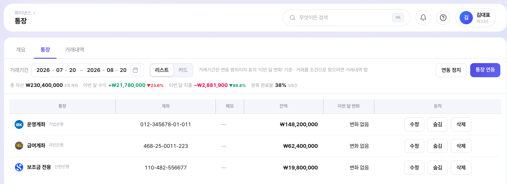
파이낸스 › 통장 — 계좌별 잔액과 자동 수집된 거래내역
자동 확정하지 않습니다. AI는 제안 상태로 등록하고, 확정은 담당자가 수행합니다.
수집된 거래를 읽어 계정과목·부가세 구분을 지정합니다.
입금자명이 거래처명과 달라도 식별합니다.
정확·합산·부분·원천징수 네 유형을 처리합니다.
직접 입력 시 차·대변을 자동 검증합니다.
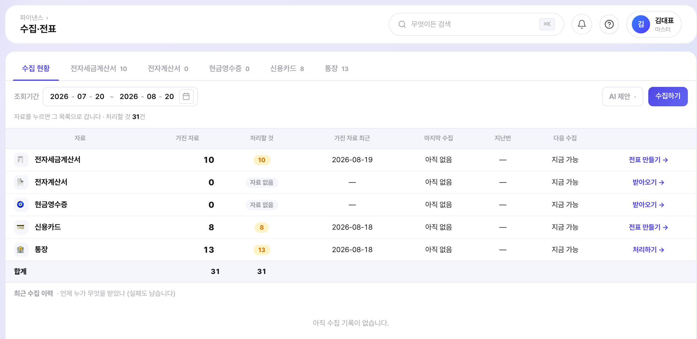
파이낸스 › 수집·전표 — 수집 자료를 전표로 전환 ／ 원천징수 차감 입금은 국내 실무에서 자동 매칭이 가장 어려운 사례입니다
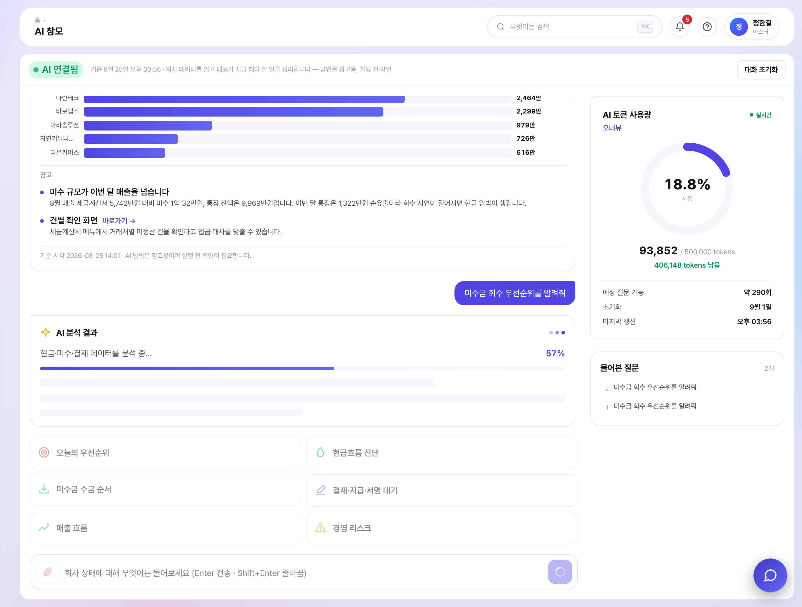
홈 › AI 참모 — 미수금 회수 우선순위 질의 결과. 거래처별 미수 비교와 판단 근거를 함께 제시
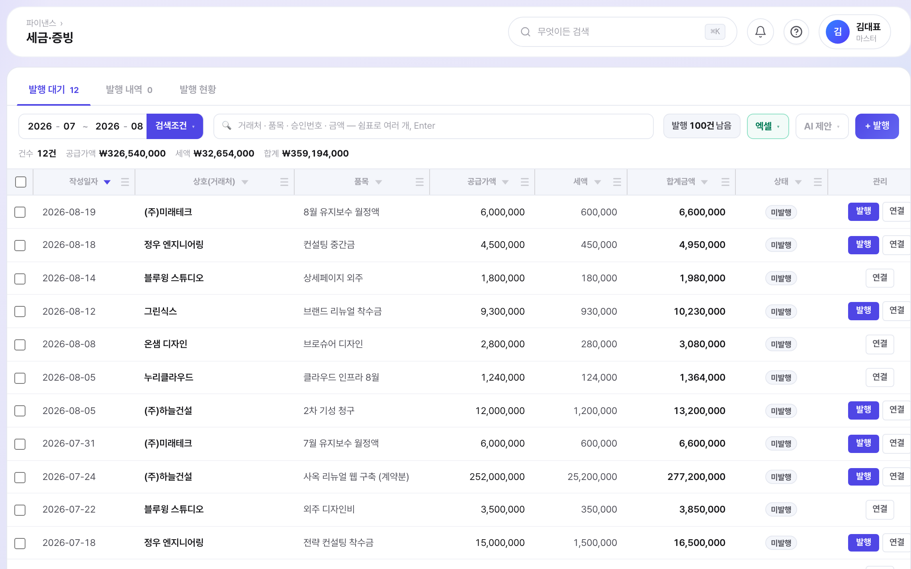
파이낸스 › 세금·증빙 — 매입·매출 계산서 조회 및 점검
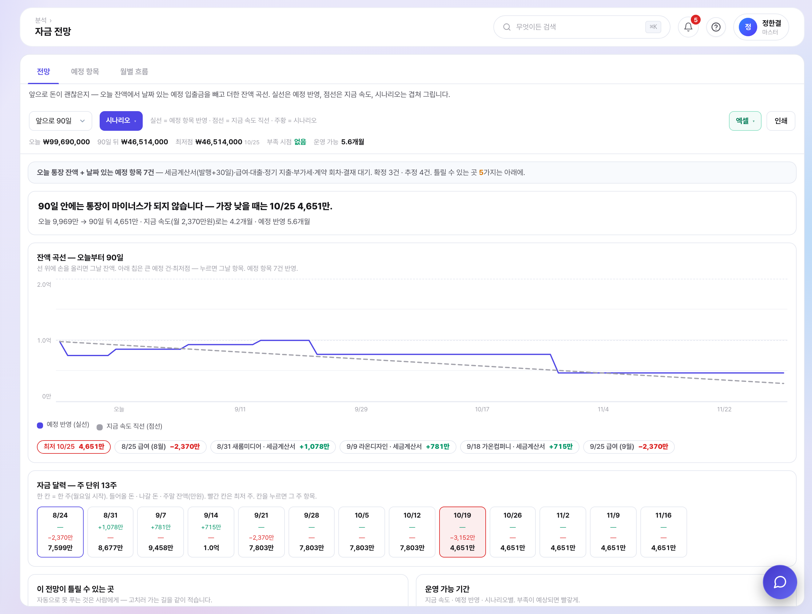
자금 전망 — 예정 입출금을 반영해 D+90 잔액을 산출하고 부족 구간을 표시합니다.
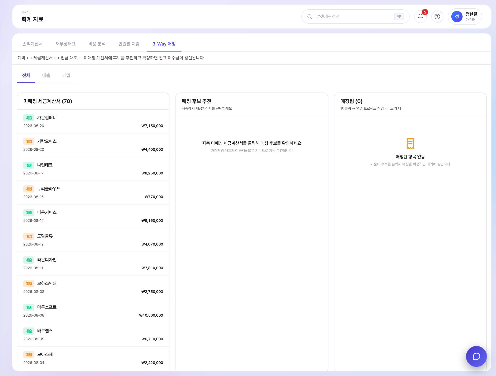
3-Way 대사 — 계약·세금계산서·입금 세 금액을 대조하고 일치 시 전표 초안을 생성합니다.
이 외 경영요약 · 손익 현황 · 매출 · 비용 · 사람별 실적 · 월결산 · 손익계산서 · 재무상태표 · 부가세 · 거래처 원장을 제공합니다.
주문서는 재고를 움직이지 않습니다. 재고는 판매·구매·생산에서 주문서를 불러와 저장할 때만 바뀝니다. 종이와 실물을 섞지 않는 구조입니다.
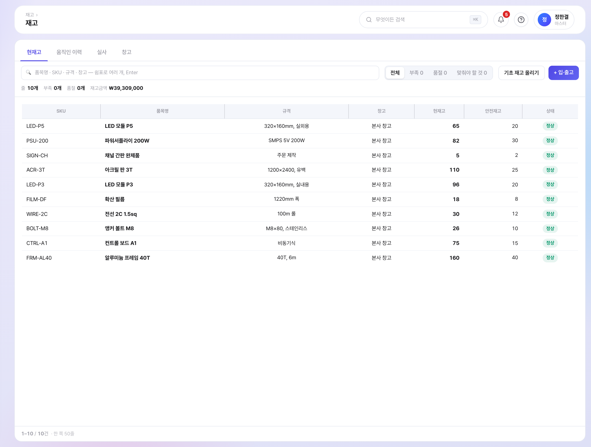
재고 › 재고 — 창고별 현재고와 안전재고 대비 상태
프로젝트를 선택하면 업무 형태에 맞는 표가 이미 구성된 상태로 열립니다. 표·칸반·요약을 전환해 사용하며, 요약은 결론·핵심 수치·확인 사항으로 자동 정리됩니다.
| 할 일 · 진행 | 무엇을 누가 언제까지 |
| 매출 흐름 | 검토 → 제안 → 계약 → 발행 → 입금 |
| 예산 · 지출 | 예산 확보와 실제 집행 확정 |
| 계약 · 갱신 | 만료일과 갱신 시점 관리 |
| 일정 · 마일스톤 | 기간이 있는 업무 |
| 회의 · 결정 | 결정 사항과 후속 조치 |
| 요청 · 검수 | 요청자와 확인자 흐름 |
| 마케팅 계정 | 광고 계정 연동 시 성과 자동 반영 |
＋ 빈 템플릿으로 컬럼을 직접 구성할 수 있습니다.
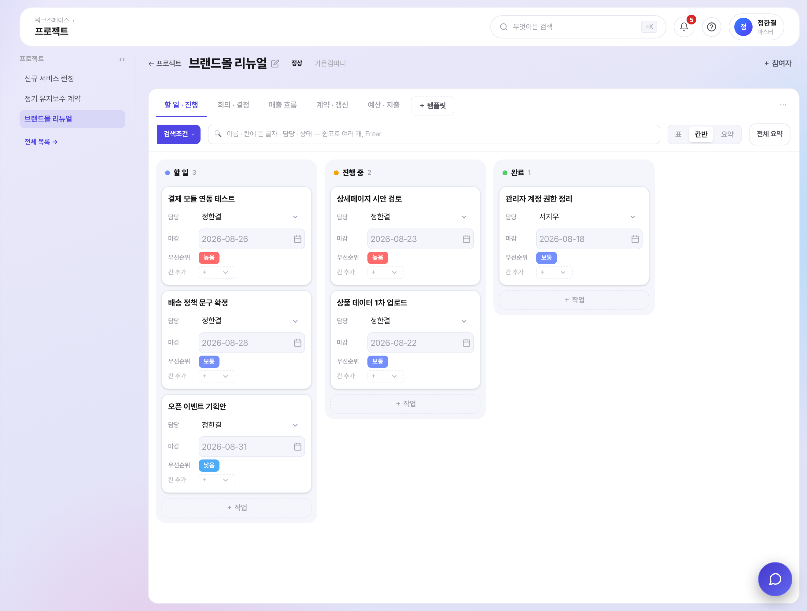
워크스페이스 › 프로젝트 — 템플릿 탭과 칸반 보기
전자계약 서비스·결재 솔루션·협업 메신저를 별도 구독하지 않아도 됩니다.
서식 관리, 직인 자동 합성, 링크 서명 요청, 완료 시 문서 잠금, 일괄 PDF 다운로드
경비·지출·휴가·구매를 단일 결재함에서 처리. 다단계 결재선
양식을 직접 구성하고 금액별 자동승인 정책을 지정합니다.
프로젝트별 채널, 파일 공유·멘션, 외부 협력사 초대(무료)
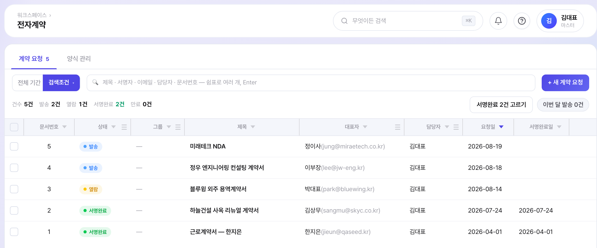
워크스페이스 › 전자계약 — 서명 요청과 진행 현황
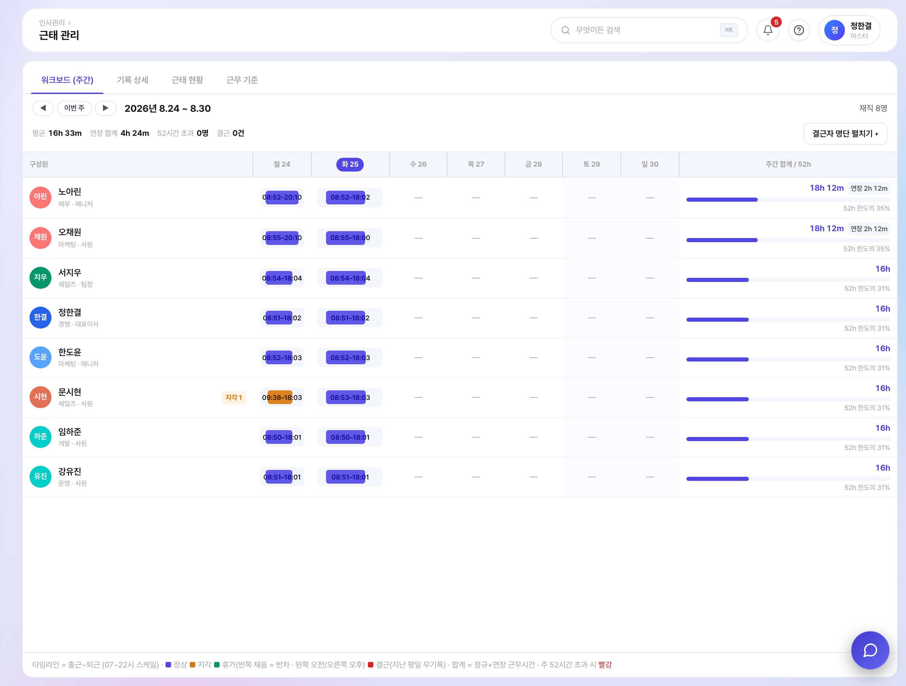
인사관리 › 근태 관리 — 주간 워크보드와 52시간 한도 대비 사용률
| 영역 | 메뉴 |
|---|---|
| 홈 | 대시보드(위젯 구성) · AI 참모 · 알림 · 마이페이지 · 지원사업 추천 |
| 파이낸스 | 통장 · 카드 · 거래처 · 수집·전표 · 세금·증빙 · 일반전표 · 매입매출전표 · 정기 지출 |
| 재고 | 품목 · 재고 · 주문서 · 판매 · 구매 · 생산 · 채널 |
| 분석 | 경영 요약 · 손익 현황 · 자금 전망 · 회계 자료 · 거래처 원장 · 부가세 |
| 워크스페이스 | 일정/할 일 · 프로젝트 · 결재 허브 · 게시판 · 메신저 · 전자계약 · 파일보관함 |
| 인사관리 | 구성원 · 근태 관리 · 근로계약·서식 · 구성원 디렉토리 |
| 설정 | 회사 정보 · 부서 · 권한 · 결재 정책 · 은행 연동 · 회계 마감 · 세무 자동화 · 증명서 관리 |
그 밖에 사업자번호 국세청 진위확인, 휴면 거래처 감지, 파트너 포털(외부 협력사 무료 초대), 통합 검색(⌘K), 문서 버전 관리를 제공합니다.
구성원마다 메뉴 30개 · 세부 기능 40개를 켜고 끕니다. 켜진 것만 그 사람에게 보입니다.
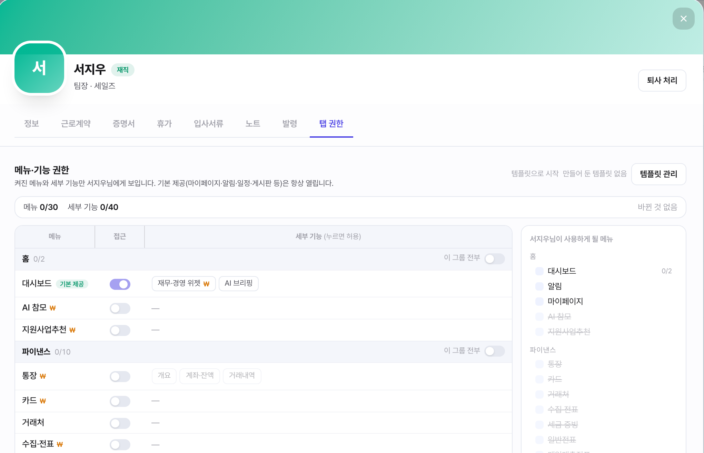
인사관리 › 구성원 › 탭 권한 — 메뉴·세부 기능 단위 권한 부여
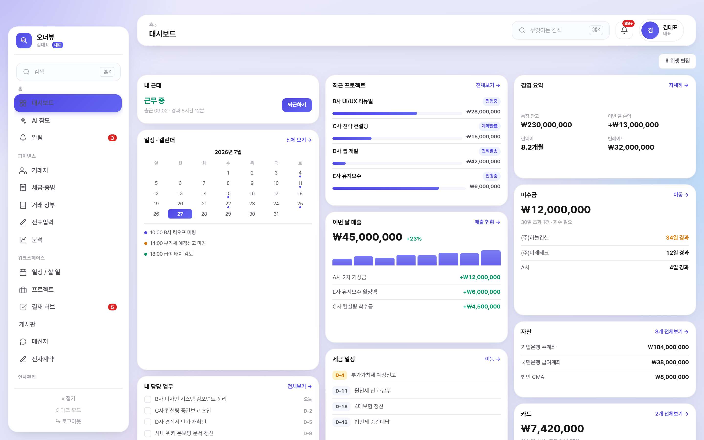
홈 › 대시보드 — 위젯 구성 화면
오너뷰는 개발사가 자사 운영에 직접 사용하고 있습니다. 아래는 해당 계정에 실제 누적된 수치입니다.
| 구분 | 내용 |
|---|---|
| 업종 | IT · 소프트웨어 |
| 규모 | 구성원 13명 |
| 사용 기간 | 2025년 5월 ~ (국세청 연동 기준 15개월) |
| 사용 범위 | 회계·세무·인사·급여·전자계약·프로젝트 전 영역 |
2026년 8월 기준 실측치이며, 회사명은 비공개 처리했습니다.
| 항목 | 내용 |
|---|---|
| 도입 비용 | 없음 (구축비·컨설팅비 없음) |
| 설치 | 없음 — 웹 기반, 별도 서버 불필요 |
| 교육 | 별도 교육 없이 사용 가능. 메뉴별 사용 가이드 내장 |
| 체험 | 14일 무료 체험 |
| 데이터 이관 | 거래처·거래내역은 엑셀/CSV 업로드 지원 |
| 요금 | 월 정액제 (인원 구간별) — 별도 안내 |
| 담당 | (주)모티브이노베이션 |
| 이메일 | creative@mo-tive.com |
| 웹사이트 | www.owner-view.com |
| 체험 | 웹사이트에서 14일 무료 체험 신청 |
사용 중인 견적서·계약서 양식을 보내주시면, 해당 양식으로 구성한 화면을 시연해 드립니다.